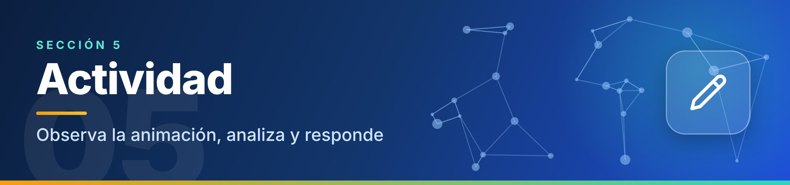

Actividad

Después de observar la animación, responde en tu cuaderno o en un documento:
1Cuando envías un paquete desde PC 1 hacia el Servidor, ¿por qué dispositivos pasa? ¿Por qué no necesita pasar por el router?
2Envía un paquete desde PC 2 hacia Internet. ¿Qué diferencia observas entre el trabajo del switch y el del router en ese recorrido?
3En esta topología en estrella, ¿qué ocurriría con la comunicación entre las computadoras si el switch dejara de funcionar? Justifica tu respuesta.